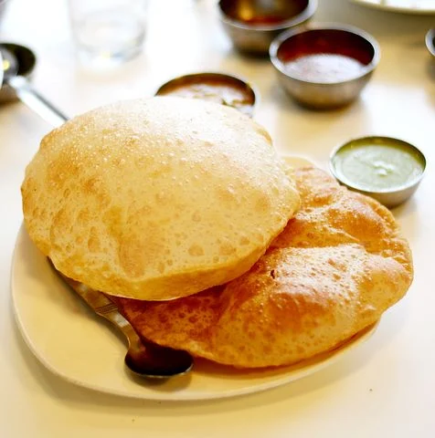

Poori

Soft and tasty Poori
Puri is a deep-fried bread made from unleavened whole-wheat flour that originated in the Indian subcontinent. It is eaten for breakfast or as a snack or light meal. It is usually served with a savory curry or bhaji, as in puri bhaji, but may also be eaten with sweet dishes
Ingredients
- Wheat flour
- Refiened Flour/li>
- Salt
Steps
- Add 1 cup whole wheat flour, ¾ teaspoon fine rava (semolina or suji) and 1/8 teaspoon salt to a mixing bowl. You can also skip rava and salt. If using milled flour (atta from flour mill) then do sieve and discard the bran.
- Pour ¾ teaspoon oil. Mix all of them well & pour ¼ cup water (4 tablespoons).
- Begin to mix to form a stiff dough. You will need another 1 to 2 tablespoons water. Sprinkle more water only as needed.
- Make a stiff & tight dough that is not crumbly or dry. It must not be soft like the roti dough.
- Drizzle another ¼ teaspoon oil and knead lightly to just smoothen the ball.
- Keep this dough covered always until all of the dough is used up to roll pooris.
- Gently roll them in between your palms just to make them smooth.
- Fry the rolled poories and serv hot